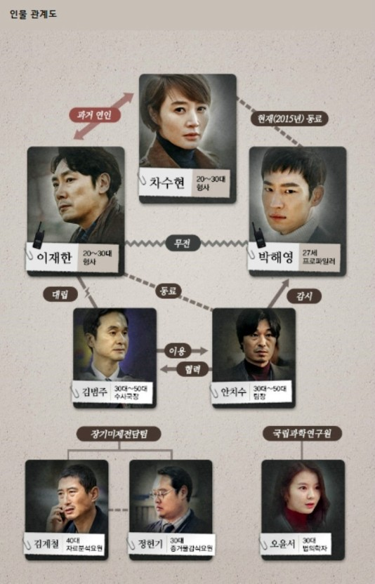

등장인물
박해영역할을 맡은 사람은 배우 이제훈이다. 직업은 장기미제 전담팀 프로파일러이다.20대 후반. 경찰대를 졸업하고 경위 계급장까지 단 엘리트지만 세상에 대한 불신으로 똘똘 뭉쳐있다.립트를 포함하거나 불러올 수 있다.
차수현 역할을 맡은 사람은 배우 김혜수 이다. 직업은 장기미제 전담팀 형사 이다. 구구절절 말보다 눈빛 하나 동작 하나로 사람들을 제압하는 현장에 살고 현장에 죽는 15년 차 베테랑 형사.
이재한 역할을 맡은 사람은 배우 조진웅이다. 직업은 강력계 형사이다. 잔머리 굴릴 줄 모르고, 한번 시작하면 무조건 직진인 우직한 형사. 그러나 정작 짝사랑하는 여자 앞에선 고개 한번 못 드는 무뚝뚝한 상남자. HTML